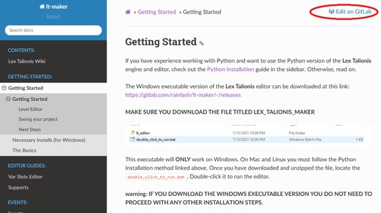
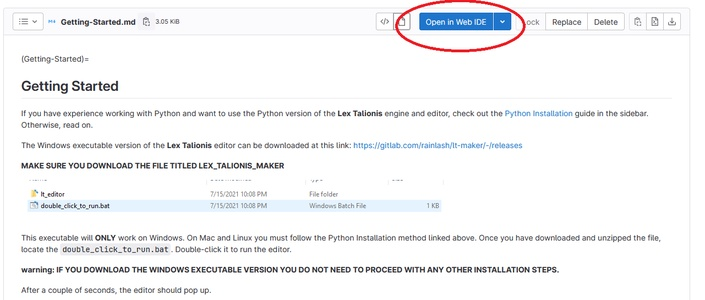
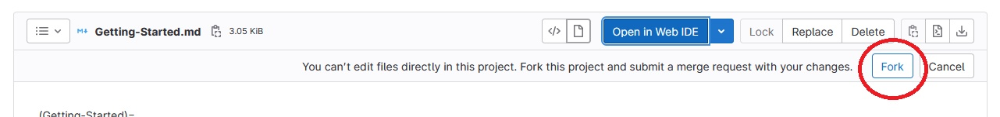
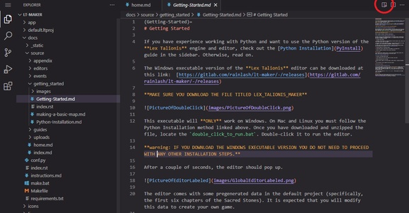
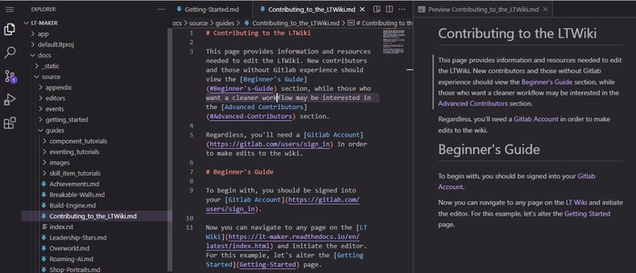
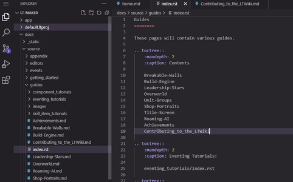
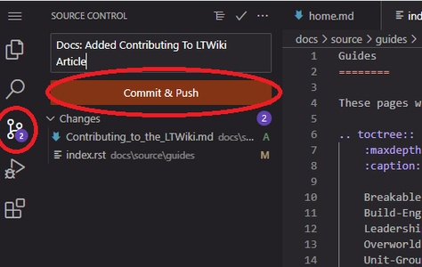
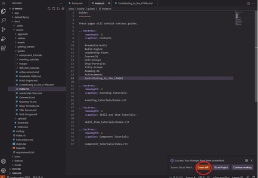
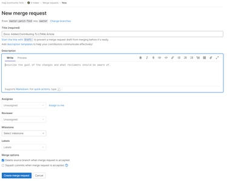

Contributing to the LTWiki
This page provides information and resources needed to edit the LTWiki. New contributors and those without Gitlab experience should view the Beginner’s Guide section, while those who want a cleaner workflow may be interested in the Advanced Contributors section.
Regardless, you’ll need a Gitlab Account in order to make edits to the wiki.
Beginner’s Guide
To begin with, you should be signed into your Gitlab Account.
Now you can navigate to any page on the LT Wiki and initiate the editor. For this example, let’s alter the Getting Started page.

You can click on the Edit on Gitlab link on the top left. This will take you to the repository. You can now click on the Open in Web IDE button:

If you haven’t done this before, it will prompt you to Fork the project. This will create a copy of the project on your account, which is necessary to make merge requests. Go ahead and click Fork:

Wait for the fork to finish. This will take a few seconds. The good news is, you only need to do this once. Once the initial fork is done, you will be free to make merge requests directly.
In either case, you should now be able to see the editor. If you want, you can click on the Preview button to see how the page is laid out. This helps in understanding the formatting syntax:

In either case, you can now make edits freely! Change whatever text you want (as long as it’s for the good of the wiki). For this tutorial, let’s make a new article. This one is actually easy to do. Just click New File in the left pane and it’ll make a new article in the current directory. Use your best judgement as to where the article goes. I’m going to make an article in Guides called Contributing to the LTWiki:

If I add a new file, I also need to add it to the index.rst file in that directory:

Now that I’ve finished, how do I merge it? This step is quick. Go to the Source Control icon on the side.
Add a commit message describing your new article.
Finally, click Commit and Push.

Hit Enter through the dialogs - they aren’t important. You’ll see a dialog pop up telling you that your commit was a success. Now, you’ll click the Create MR button, and it’ll take you to the final page:


Where you can fill out some more information on what you changed. Finally, click the Create Merge Request button.
One of the owners of the repository will approve of your new article, and after that happens, it’ll be there forever!
Advanced Contributors
If you’re already a developer, then you should be generally aware of how to fork projects, how to clone projects, and make upstream merge requests from your own repository.
The LT documentation is kept within the repository, in the docs/ folder. The following commands assumes that the cwd is inside docs/.
Editing
The documentation source can be found in source/.
Building Docs
Instructions for how to do this can be found in the DEV_README.md file.